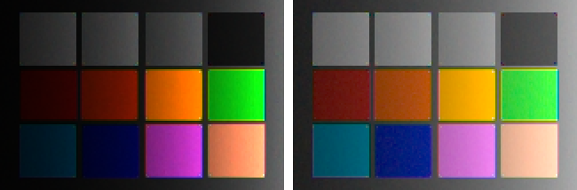
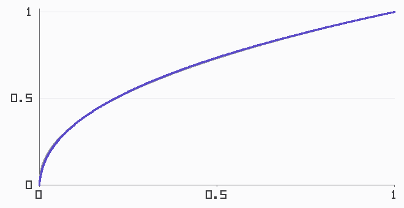
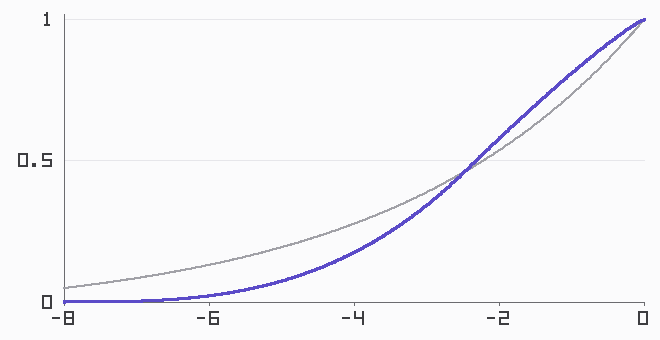
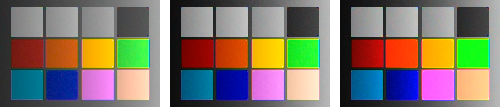
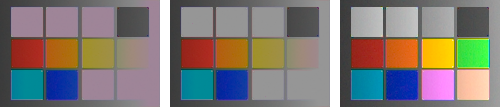
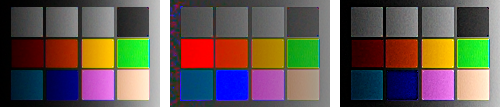
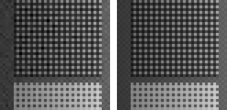

Everything the pipeline has produced so far is linear: every value proportional to photons caught, the way physics counts and no eye or screen does. Since Chapter 1, one small function — srgb_encode, used on faith and promised an explanation — has stood between those numbers and every figure in this book. This chapter pays that debt first, then goes past it: from the encoding a display requires to the curves a photograph wants, then to the top of the range where clipping destroyed data, and finally to the local operations that let a bounded screen hold an unbounded scene.
7.1Why linear looks wrong
Chapter 0’s very first figure contained this chapter in miniature: a linear ramp that looked wrong — too dark too long, then rushing to white. The reason is the mismatch between how light adds and how seeing works. Vision is roughly logarithmic: each stop feels like a similar step, whether it is the stop from deep shadow to shadow or the stop from bright to blinding. A display fed raw linear values spends half its numeric range on the brightest stop (Chapter 2 made the same point about bits) and starves everything below middle gray:

The fix is the transfer function: a concave curve applied at output that hands the display’s range out in roughly perceptual steps. sRGB’s is the one this book has been using — a power curve of exponent 1/2.4 (that exponent is the gamma a half-century of folklore is named after) with a short linear segment at the very bottom, engineered so the toe doesn’t demand impossible precision near zero:

Two words of vocabulary make the rest of the chapter sayable. Values proportional to scene light are scene-referred; values meaning “fraction of display brightness” are display-referred. The transfer function is the border crossing, and the entire art of tone is deciding what happens at the border — because a faithful crossing, it turns out, is not what anyone wants to look at.
7.2Curves: the look lives here
Apply nothing but the faithful sRGB encoding and the result is the left panel of every “flat RAW” complaint on the internet: correct, and lifeless. Film never had that problem — not by design taste but by chemistry: its response to log exposure was an S, compressing shadows into a toe and highlights into a shoulder, with a mid-range slope steeper than faithful. A century of photography calibrated every eye to that S. Digital tone curves are that chemistry, reenacted on purpose.
Before shaping the curve, settle how curves are carried. Formulas full of powers and logarithms are for designing; pipelines ship curves as lookup tables:
code/pxp/tone.pydef bake_curve(curve, size=4096):
"""A tone curve, tabulated: 4096 samples over [0, 1].
Real pipelines do exactly this — curves are designed in floating
point and shipped as tables — and the book follows suit for its
own reason too: reading a table with linear interpolation is the
same arithmetic in both code tiers, where a formula full of logs
and powers is not guaranteed to round identically."""
return [curve(i / (size - 1)) for i in range(size)]
Our S is built on the axis film responded to — stops above a black floor — with a toe, a shoulder, and one deliberate anchor: middle gray maps to the same brightness the plain sRGB curve gives it, so switching curves changes the look without changing the exposure:
code/pxp/tone.pydef filmic_curve(contrast=2.0, black_stops=8.0):
"""An S-curve on the axis film actually responded to: stops.
Position each value by how many stops it sits above a chosen
black floor, then bend that axis with a toe (shadows compressed
smoothly to black), a straight-ish middle whose slope is the
contrast, and a shoulder (highlights rolled off, never slammed).
Middle gray (18%) is pinned to the brightness the plain sRGB
curve gives it, so the look changes and the exposure does not.
The shoulder needs contrast > 1.75 to roll off smoothly; the toe
is forgiving."""
pivot_t = (math.log2(0.18) + black_stops) / black_stops
pivot_y = display_curve()(0.18)
toe_power = contrast * pivot_t / pivot_y
shoulder_power = contrast * (1 - pivot_t) / (1 - pivot_y)
def curve(value):
if value <= 2.0 ** -black_stops:
return 0.0
t = min(1.0, (math.log2(value) + black_stops) / black_stops)
if t <= pivot_t:
return pivot_y * (t / pivot_t) ** toe_power
return 1.0 - (1.0 - pivot_y) * (
(1.0 - t) / (1.0 - pivot_t)) ** shoulder_power
return curve

One decision remains, and it is a color decision hiding in a tone tool: apply the curve to what? Per channel is the tradition — each of R, G, B through the table independently — and it has a famous side effect: an S applied per channel drives the channels apart wherever they differ, which reads as a saturation boost. Apply the curve to luminance only, letting each pixel keep its channel ratios, and color stays measured while the punch drains out:

7.3The top of the range
The S-curve’s shoulder handles bright values gracefully — values that exist. Chapter 2’s response curve set a harder boundary: at the well’s ceiling the sensor stops recording, and what a photosite never wrote down, no curve can render. But clipping has a structure, and the structure is exploitable.
Recall what white balance did: multiplied the channels by unequal gains. That means the post-white-balance channels clip at unequal levels — the gains themselves — with two consequences. A fully blown highlight lands at those gain values, and under D65 that triple reads pale magenta: the notorious cast of every blown sky, now derivable from first principles. And near the boundary the channels clip at different scene brightnesses, so there is a band where one channel has flatlined while the others still carry the scene. Both facts point at the same modest repair:
code/pxp/tone.pydef reconstruct_highlights(image, clip_levels, margin=0.97):
"""Rebuild clipped channels from unclipped neighbors-in-color.
After white balance the channels clip at different levels — the
gains saw to that — so a highlight often loses one channel while
the others still carry structure. Where that happens, assume the
highlight is neutral (post white balance, a defensible default)
and give the clipped channel the mean of the survivors. Where
all three channels are gone, no structure survives — but the
color is known to be a lie (it is the white-balance gains
themselves, the magenta of every blown highlight), so the pixel
is at least forced neutral at its brightest channel. This is the
simplest member of a family of guesses; commercial tools ship
smarter, proprietary ones, and every member is a guess."""
thresholds = [level * margin for level in clip_levels]
out = Image(image.width, image.height, channels=3)
for y in range(image.height):
for x in range(image.width):
pixel = list(image.get(x, y))
clipped = [c for c in range(3)
if pixel[c] >= thresholds[c]]
if 0 < len(clipped) < 3:
survivors = [pixel[c] for c in range(3)
if c not in clipped]
total = 0.0
for value in survivors:
total += value
estimate = total / len(survivors)
for c in clipped:
if estimate > pixel[c]:
pixel[c] = estimate
elif len(clipped) == 3:
top = max(pixel)
pixel = [top, top, top]
out.set(x, y, pixel)
return out
Patent note
Highlight reconstruction is a family of guesses, and several commercial members of the family — notably Adobe’s — are proprietary and patent-encumbered. The version above is the simplest defensible one: neutral-assumption borrowing, fully disclosed, no attempt to match any product’s behavior. Real tools propagate color from unclipped neighborhoods rather than assuming neutrality, and fail in more sophisticated ways.

7.4Local tone: compressing the lighting, keeping the texture
A global curve assigns one output brightness per input brightness, and for scenes wider than the display that is a straitjacket: compress eight stops into a screen’s range with one curve and either the shadows mush, the highlights flatten, or the mid-range slope collapses into fog. Eyes solve this constantly — they adapt locally, reading a face in shadow and a sky in sun at full contrast simultaneously. Local tone mapping is the pipeline’s version of that trick, and its core move is a decomposition: split brightness into a smooth base (the lighting) and the detail riding on it (the texture), then treat them differently — compress the lighting, keep the texture.
The split has to respect edges, or halos bloom around every boundary — which is why its workhorse is not a blur but the bilateral filter, an average that discounts neighbors by how different they are, not just how far:
code/pxp/tone.pydef bilateral(plane, radius=4, range_sigma=0.15):
"""The edge-preserving average: each pixel becomes a weighted
mean of its neighborhood, where a neighbor's weight falls with
spatial distance (a Gaussian) and with *difference in value* (a
rational falloff). Similar neighbors count; neighbors across an
edge barely do — so smooth regions smooth further and edges
survive. The rational range kernel is a disclosed swap for the
usual Gaussian: same shape where it matters, and made of
arithmetic that rounds identically in both code tiers."""
height, width = len(plane), len(plane[0])
spatial = {}
for dy in range(-radius, radius + 1):
for dx in range(-radius, radius + 1):
spatial[(dx, dy)] = math.exp(
-(dx * dx + dy * dy) / (2.0 * (radius / 2.0) ** 2))
out = []
for y in range(height):
row = []
for x in range(width):
center = plane[y][x]
total, norm = 0.0, 0.0
for dy in range(-radius, radius + 1):
for dx in range(-radius, radius + 1):
nx = min(width - 1, max(0, x + dx))
ny = min(height - 1, max(0, y + dy))
value = plane[ny][nx]
closeness = (value - center) / range_sigma
weight = spatial[(dx, dy)] \
/ (1.0 + closeness * closeness)
total += weight * value
norm += weight
row.append(total / norm)
out.append(row)
return out
With the split in hand, the two famous moves are two gain settings on the same machine — Durand and Dorsey’s range compression (shrink the base, keep the detail) and the slider every editor labels clarity (keep the base, push the detail):
code/pxp/tone.pydef local_contrast(image, table, base_gain=1.0, detail_gain=1.0,
radius=4, range_sigma=0.15):
"""Tone mapping's local move: split brightness into a smooth
base and the detail riding on it, then treat them differently.
base_gain < 1 compresses the lighting (the Durand-Dorsey move:
shrink the range, keep the texture); detail_gain > 1 is the
slider marked 'clarity' (keep the lighting, push the texture).
The split runs on display-referred luminance — a disclosed
simplification; the original operates on log luminance, and at
these strengths the two agree closely."""
encoded = apply_lut(image, table)
bright = [[luminance(encoded.get(x, y))
for x in range(image.width)]
for y in range(image.height)]
base = bilateral(bright, radius=radius, range_sigma=range_sigma)
pivot_total = 0.0
for row in base:
for value in row:
pivot_total += value
pivot = pivot_total / (image.width * image.height)
out = Image(image.width, image.height, channels=3)
for y in range(image.height):
for x in range(image.width):
old = bright[y][x]
if old <= 0.0:
out.set(x, y, [0.0, 0.0, 0.0])
continue
detail = old - base[y][x]
new = (pivot + (base[y][x] - pivot) * base_gain
+ detail * detail_gain)
scale = new / old
out.set(x, y, [value * scale
for value in encoded.get(x, y)])
return out

Patent note
The operators above follow the published literature — Reinhard’s global operator, Durand & Dorsey’s bilateral decomposition, Fattal’s gradient-domain work are the citable trunk of this field. Named commercial sliders (“Dehaze” and its relatives) are in some cases patented implementations; this book stays with the academic operators and does not attempt to reproduce any specific product’s response.
Push either gain far enough and the seams show: gradient reversals at strong edges, the over-cooked “HDR look” of the 2010s, noise promoted to texture. The craft is entirely in the restraint, and the machinery is entirely above.
7.5Sidebar: more photons, from the exposure dial
Exposure stacking, nearly free
Chapter 2 left one cure for noise: collect more photons. When the scene out-ranges the sensor, collect them across several exposures — bracket, then merge in linear light, which our simulator makes a ten-line experiment (merge_exposures in this chapter’s figure code): divide each capture by its exposure to land on one radiometric scale, then average every bracket in which each photosite stayed unclipped, weighted by exposure. The long exposures testify about the shadows, the short one about the highlights, and the merged frame is scene-referred with more range than any single capture — measured on our deep-shadow strip, relative noise drops from 0.044 to 0.013, close to the factor the added photons predict. The result still has to cross the display border, which is why HDR merging without Section 7.4’s tone mapping just produces a wider image nobody can see; the two techniques became famous together for a reason.

The image now spends its display range like a photograph instead of a measurement: shadows legible, highlights rolled off or repaired, the look chosen rather than inherited. What tone cannot do is make detail crisper or noise quieter — its local variant visibly does the opposite of the latter. Those two jobs, sharpening and denoising, are Chapter 8’s — including the deconvolution promised to Chapter 6’s stubborn halo, and the walk from the humble median filter to Non-Local Means.